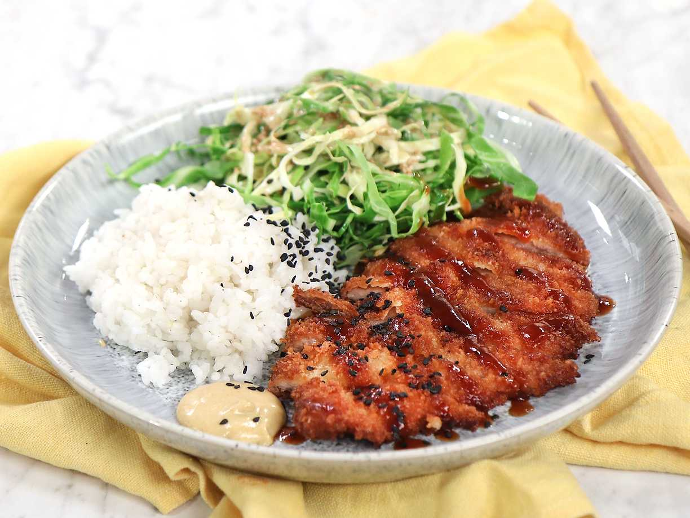

Tonkatsu
Tonkatsu, a Japanese culinary treasure, elevates the humble pork cutlet to a crispy masterpiece. This dish involves coating pork in panko breadcrumbs and frying it to golden perfection. The result is a crunchy exterior that gives way to succulent, juicy pork inside. Tonkatsu is typically served with a side of tangy tonkatsu sauce, complementing the savory richness of the dish. A symbol of comfort and flavor, tonkatsu continues to captivate food enthusiasts with its delightful simplicity and satisfying crunch.